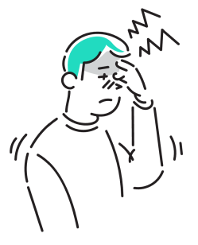
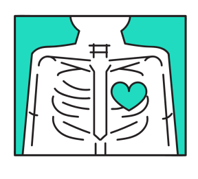
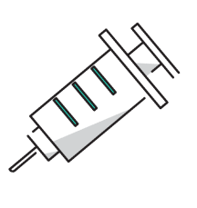

受付時間 9時〜12時 / 13〜18時
休診日：木曜・土曜午後・日曜
休診日：木曜・土曜午後・日曜
診察内容
当院では、地域の皆様の健康を支えるため、
幅広い内科診療を行っております。
日常的な体調管理から、各種の検査や治療に至るまで、
どんなお悩みもお気軽にご相談ください。
幅広い内科診療を行っております。
日常的な体調管理から、各種の検査や治療に至るまで、
どんなお悩みもお気軽にご相談ください。
1.一般内科診療

風邪や発熱、喉の痛み、頭痛、腹痛などの症状を中心に、一般的な体調不良の診療を行っています。
また、原因不明の不調や軽い症状であっても、早期診断に努めております。
高血圧症、糖尿病、脂質異常症（高コレステロール血症）、
メタボリック症候群など、生活習慣病の診断と治療を行います。
病気の進行を予防し、健康維持のための生活指導や薬物療法を行います。
胃痛、胃もたれ、胸やけ、便秘、下痢などの消化器系の不調に対応しています。必要に応じて胃カメラや超音波検査などを実施し、胃腸の健康をサポートします。
咳、息切れ、胸の痛みなど、呼吸器系の症状について診察を行っています。季節性の喘息やアレルギー性鼻炎、慢性閉塞性肺疾患（COPD）などにも対応し、適切な治療と予防をサポートします。
5.健康診断・各種検査

定期健康診断をはじめ、血液検査、尿検査、心電図、超音波検査、レントゲン検査などを行い、病気の早期発見と予防に努めます。異常が見つかった場合は、経過観察や専門治療へとつなげてまいります。
6.予防接種

インフルエンザや肺炎球菌などの各種予防接種を行っています。定期的な接種で感染予防と体調管理を支援いたします。予防接種は予約制となりますので、事前にお問い合わせください。
禁煙をご希望の方に、禁煙治療とサポートを行っています。必要に応じて、ニコチン依存症の治療薬を使用し、無理なく禁煙が継続できるようお手伝いいたします。

地域の皆様に安心してご来院いただけるよう、私たちスタッフ一同、誠心誠意対応いたします。それぞれの専門性と温かさを活かし、皆様の健康を支えるパートナーとしてお力になれるよう努めてまいります。
院長：佐藤 太郎
経歴： 光明大学医学部卒業後、瑞穂中央総合病院で内科医として10年間勤務。その後、地域医療への貢献を目指し、佐藤医院を開院。
経歴： 光明大学医学部卒業後、瑞穂中央総合病院で内科医として10年間勤務。その後、地域医療への貢献を目指し、佐藤医院を開院。
専門分野： 生活習慣病、呼吸器疾患、内科全般
メッセージ：
患者様にとって気軽に相談できる「かかりつけ医」を目指しています。
どんな小さな不安でも、まずはご相談ください。
メッセージ：
患者様にとって気軽に相談できる「かかりつけ医」を目指しています。
どんな小さな不安でも、まずはご相談ください。
看護師長：鈴木 真理
経歴： 白桜大学看護学部卒業後、緑が丘大学病院で10年勤務。地域医療に携わりたい思いから、佐藤医院に入職。
経歴： 白桜大学看護学部卒業後、緑が丘大学病院で10年勤務。地域医療に携わりたい思いから、佐藤医院に入職。
得意分野： 患者様への親身な対応、注射・採血技術、健康管理指導
メッセージ：
安心して治療を受けていただけるよう、いつも笑顔でお待ちしています。 些細なことでもお気軽にご相談ください。
メッセージ：
安心して治療を受けていただけるよう、いつも笑顔でお待ちしています。 些細なことでもお気軽にご相談ください。
事務長：田中 和彦
経歴： 明邦医療専門学院卒業後、光寿記念病院などで医療事務を経験。現在は佐藤医院で事務長を務める。
経歴： 明邦医療専門学院卒業後、光寿記念病院などで医療事務を経験。現在は佐藤医院で事務長を務める。
得意分野： 予約・受付対応、医療保険手続き、スムーズな会計管理
メッセージ：
皆様がスムーズに診療を受けられるよう、受付や手続きのサポートに力を入れています。 わかりやすい説明を心がけていますので、気になる点があればお気軽にお尋ねください。
メッセージ：
皆様がスムーズに診療を受けられるよう、受付や手続きのサポートに力を入れています。 わかりやすい説明を心がけていますので、気になる点があればお気軽にお尋ねください。
臨床検査技師：高橋 由美
経歴： 東都臨床検査技術専門学校を卒業後、武蔵中央医療センターにて15年間の臨床検査技師としての経験を積む。
経歴： 東都臨床検査技術専門学校を卒業後、武蔵中央医療センターにて15年間の臨床検査技師としての経験を積む。
得意分野： 血液検査、心電図検査、超音波検査
メッセージ：
検査は不安が伴うこともありますが、できるだけリラックスしていただけるよう、優しく丁寧な対応を心がけています。
メッセージ：
検査は不安が伴うこともありますが、できるだけリラックスしていただけるよう、優しく丁寧な対応を心がけています。
医療事務：山本 花
経歴： 希望医療カレッジ卒業後、さくら診療所にて受付業務を担当。現在は佐藤医院で患者様対応を担当。
経歴： 希望医療カレッジ卒業後、さくら診療所にて受付業務を担当。現在は佐藤医院で患者様対応を担当。
得意分野： 受付業務、カルテ管理、医療費計算
メッセージ：
皆様に気持ちよくご利用いただけるよう、笑顔と真心を大切にしております。
初めての方もどうぞ安心してお越しください。
メッセージ：
皆様に気持ちよくご利用いただけるよう、笑顔と真心を大切にしております。
初めての方もどうぞ安心してお越しください。


受付時間 9時〜12時 / 13〜18時
休診日：木曜・土曜午後・日曜
〒123-4567 東京都台東区上野 0-0-0
休診日：木曜・土曜午後・日曜
〒123-4567 東京都台東区上野 0-0-0